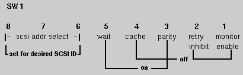

The following sections offer information on the two most popular 1/2-inch tape drives used with Silicon Graphics systems. Refer to your device documentation for the most current information.
There are two DIP switch banks located on the rearmost board in the small cardcage at the rear of the Kennedy drive (see Figure 4-1 and Figure 4-2).

Figure 4-1 : Kennedy Dipswitch Bank 1
Figure 4-2 : Kennedy Dipswitch Bank 2
Note: This applies to only two of the four SCSI controller boards. The other two, including the current versions, are configured from the front panel.